Проверка перевозчика в ОЭБ: Полное руководство
Статусы допуска к работе
Перед началом работы с КА необходимо проверить его допуск к работе. В 1СРБ Нужно
пройти
по пути: «Покупка» ->
«Контрагенты» и осуществить поиск по ИНН.
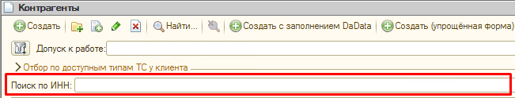
Если поиск не дал результатов - необходимо создать карточку контрагента. Процесс создания карточки
можно
найти в соответствующем разделе.
Если по ИНН карточка найдена - открываем её.
Для проверки статуса, в карточке контрагента, на вкладке
«Общие» необходимо нажать
кнопку
«Договоры контрагента» и выбрать из списка действующий договор. Открыть его
двойным кликом мышки.
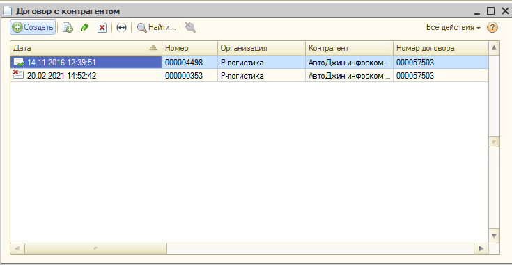
Сам статус будет отображаться в правом верхнем углу окна договора
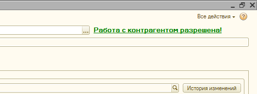
В системе предусмотрены следующие статусы:
«Работа разрешена»: Назначается ОЭБ на срок 6 месяцев. По истечении времени статус
автоматически меняется на «Необходима текущая проверка», что означает необходимость повторной
проверки КА
«Не проверен»: КА есть в базе 1С, но ОЭБ еще не проводил
проверку
«Работа запрещена»: Назначается ОЭБ. Если причина в
ошибке менеджера (не предоставлены данные), то причину запрета можно проверить.
Эту информацию
сотрудники могут прочитать в договоре, по которому проводилась проверка (Карточка КА - вкладка
«Общие» -> «Договоры контрагента» -> вкладка
«Проверка»), либо в карточке ТС/водителя на странице «Проверка».
Во всех
остальных
случаях
причины скрыты и доступны ТОЛЬКО руководителям (запрещено разглашать их перевозчику или
собственнику)
Базовые требования к Контрагенту
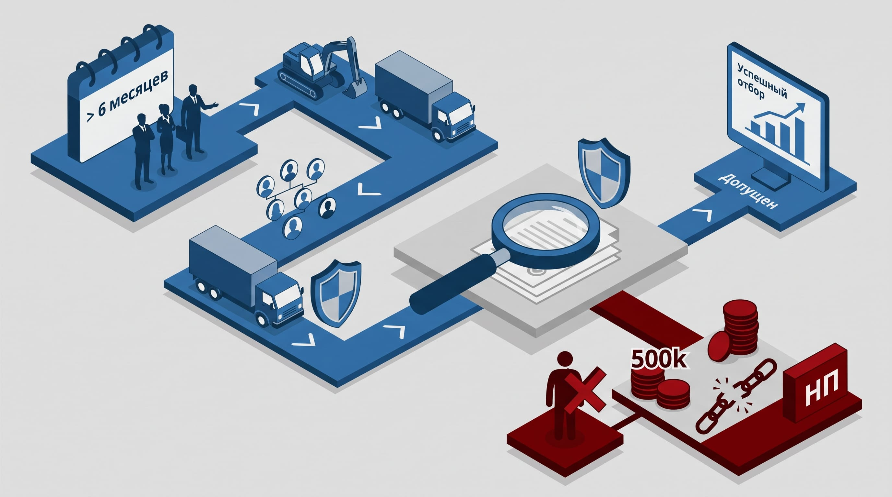
С целью обеспечения безопасности грузоперевозки и минимизации случаев мошенничества - перевозчик
должен соответствовать нашим критериям
- Организация должна существовать на рынке более 6 месяцев (без
смены
учредителей и директора), а тягач должен находиться в её собственности также не менее 6 месяцев.
Если в собственности нет седельного тягача, но есть другая техника/спецтехника на сопоставимую
сумму - работа с контрагентом также допускается
- Если у компании нет в собственности тягача или другой техники/спецтехники на сопоставимую сумму,
но она есть у директора,
учредителя или их близких родственников, работа возможна только по специальному согласованию с
ОЭБ.
Если фирма новая (на рынке менее 6 мес.), но у неё есть связанная
организация (ИП родственников или директора), сообщите об этом ОЭБ через раздел
«Вопросы и Ответы (ВиО)» — с ними можно работать после проверки.
-
Если на АТИ
у контрагента есть отметка «НП» или активные претензии
на
вкладке «История Претензий» (постоянная динамика), это может негативно повлиять на результат
проверки ОЭБ.
Перевозчики без регистрации в АТИ: С контрагентами без регистрации в АТИ
сотрудничество допускается по результатам проверки ОЭБ при условии запроса
рекомендаций.
К работе не допускаются:
- Физические лица
- Перевозчики, которые не соответствуют хотя бы 1-му из выше перечисленных пунктов (если эти
пункты не взаимоисключающие)
- Если между нами и конечным перевозчиком более 1 посредника.
- При наличии задолженности у компании свыше 500 000 руб.
- Перевозчики, в ходе проверки которых выявлены критические моменты: есть другие источники,
где организация упоминается как НП, убыточное ведение работы организации, задолженности,
превышающие порог в 500 000 руб. и прочее
Правила сбора рекомендаций
ОЭБ может запросить
рекомендации на контрагента. Ниже представлены требования к рекомендациям и рекомендателям
- Рекомендацию дает организация, с которой КА совершил минимум 2
документально подтвержденных рейса за последние 6 месяцев.
- Рейсы с рекомендателем должны быть документально подтверждены (пример: договор на перевозку
груза, договор аренды на рейс и др.)
- Грузоперевозки с рекомендателем должны иметь характер постоянной основы (не менее 2-х
заявок за последние 6 месяцев)
Если проверяемый КА зарегистрирован в АТИ, то оставленные рекомендации в этом ресурсе так же
могут
быть учтены
- Что и где фиксируем: В карточке КА в поле «Комментарий» нужно
внести: Код АТИ, Название
организации, ФИО и номер телефона рекомендателя (номер должен быть подтвержден в АТИ).
Запрос документов и правила созвона
Вам необходимо запросить у перевозчика сканы или четкие фото документов:
- ИНН/ЕГРИП
- Первая страница паспорта и прописки
директора и водителя
- Адрес юридический, фактический и почтовый, номера телефонов (директора и основного контактного
лица), адрес электронной почты
- Водительское удостоверение (с 2 сторон)
- Полные банковские реквизиты
- ПТС/СТС (с 2 сторон) на каждый вид транспорта (тягач, прицеп)
- Для юридических лиц: обязательным документом является
решение
учредителя(-ей) о назначении директора
- Если груз > 3 млн руб. или
по требованию клиента, для прицепа типа рефрижератор необходимо фото работающего прибора
измерения температуры или распечатка
не
старше 1 месяца
В телефонном разговоре с водителем (при создании или редактировании его карточки) обязательно
уточните: стаж работы в этой компании, стаж работы на
конкретном ТС и телефон члена семьи.
ПРАВИЛА КОММУНИКАЦИИ:
Все переговоры ведутся строго через корпоративную IP-телефонию (СИПнет/МТС). Использование личных
мобильных телефонов и мессенджеров (Telegram, МАКС и др.) ЗАПРЕЩЕНО.
Исключения:
иностранный
гражданин-директор или выгрузка вне РФ. За нарушение этого правила сотруднику начисляется замечание
по качеству "В". Все полученные контакты вносятся в 1С в полном объеме, выборочное заполнение
запрещено.
После получения номеров телефонов и e-mail, их требуется в обязательном
порядке
сверить с данными контрагента на сайте АТИ.
Алгоритм отправки на проверку в ОЭБ
Для перевозчика проверка ОЭБ складывается из двух составляющих:
- Отправка на проверку договора
- Отправка на проверку транспорта (водитель - тягач - прицеп)
Ниже описаны каждый из этих сценариев
Проверка КА (договор)
- В заполненной карточке контрагента на вкладке «Общие» нажмите «Создать договор с
контрагентом»
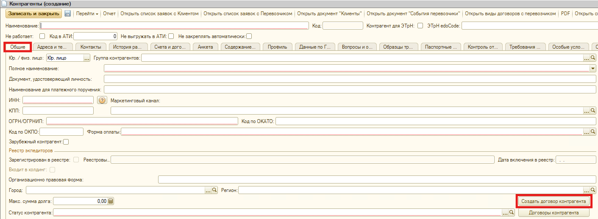
- Откроется форма создания договора. Перейдите на вкладку «Документы»
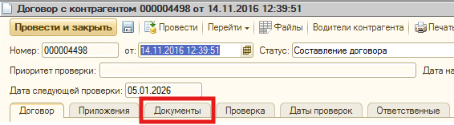
- Добавьте/актуализируйте документы.
Левая часть формы - для юр. лиц. Правая - для ИП.
Блок «Паспорт» общий для всех.
После заполнения нажмите «Уведомить ОЭБ о
необходимости
проверки».
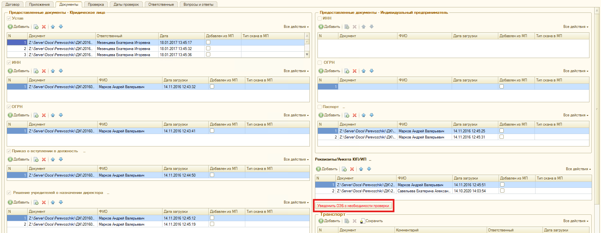
- Отобразиться окно с выбором приоритета: С (несрочно) или В (в
порядке очереди в
течение дня. Обычно выбираем этот вариант).
- Если данных не хватает, ОЭБ приостановит
проверку и пришлет вам Служебное сообщение (СС). Соберите данные и возобновите проверку.
- По завершении проверки вы также получите СС с результатами. Если проверка больше не нужна —
обязательно уведомите ОЭБ и проставьте
статус «Проверка отменена сотрудником».
Дополнительная информация: Приоритет А (срочно) нельзя выбрать вручную.
выставляется только по
согласованию с вашим Руководителем через страницу «Вопросы и ответы»
Проверка транспорта
-
В карточке контрагента-перевозчика нажимаем «Перейти» - b>«Транспорт контрагентов»
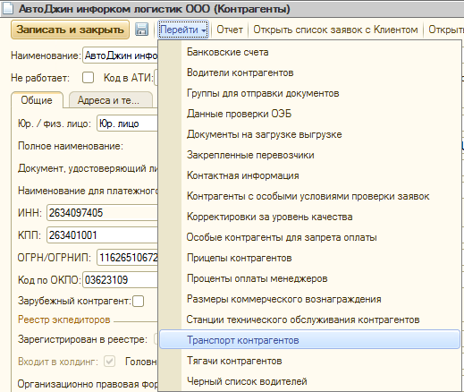
-
Проверяйем в списке наличие связки, заявленной перевозчиком на рейс (водитель - тягач - прицеп)
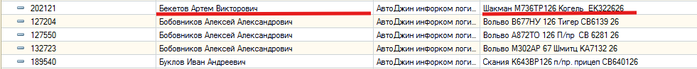
-
При полном совпадении - открываем её. Если полное совпадение всех трёх составляющих (водитель -
тягач - прицеп) отсутствует - создаем новую связку через кнопку «Создать»
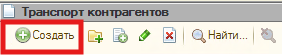
-
В окне создания транспорта необходимо заполнить 3 обязательные вкладки: «Данные
водителя»,«Данные тягача»,«Данные прицепа»
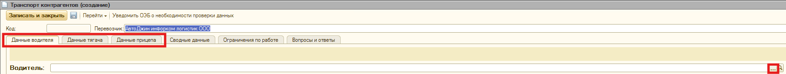
Предполагается, что отдельные карточки водителя, тягача и прицепа ранее уже созданы.
- Если мы создаем транспорт с нуля - то на данном этапе мы просто выбираем их из списка
(при нажатии
"..." отобразится список
карточек текущего контрагента)
- Если мы не создаем связку с нуля а выбрали уже действующую - тогда обращаем внимание на
текущий статус каждой карточки (если статус любой, кроме
"Работа разрешена" - значит
карточка требует проверки):
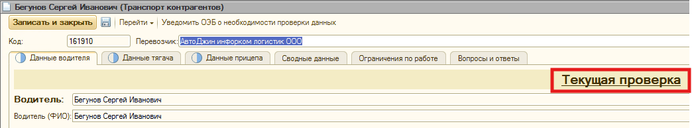
-
Блок «Планируемый рейс» на данном этапе обязательно должен быть заполнен. Нажимаем
"..."
и выбираем предварительную заявку, по которой ставим рейс
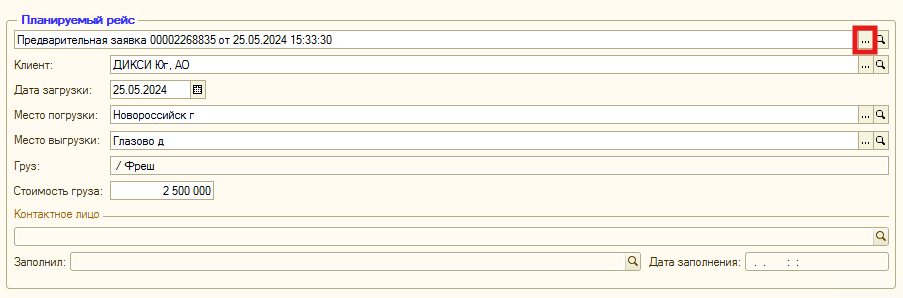
-
Убедившись, что вкладки заполнены нужными данными - нажимаем «Уведомить ОЭБ о необходимости
проверки». Все карточки, требующие проверки будут отправлены автоматически
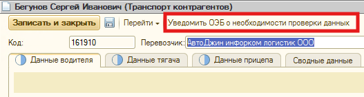
Отслеживание статуса проверки
Проверять статус текущей проверки в разделе «Перевозки» - «ОЭБ»
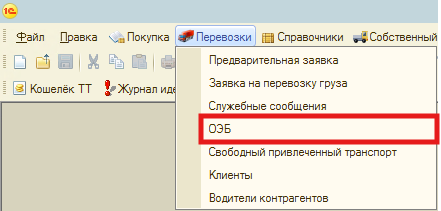